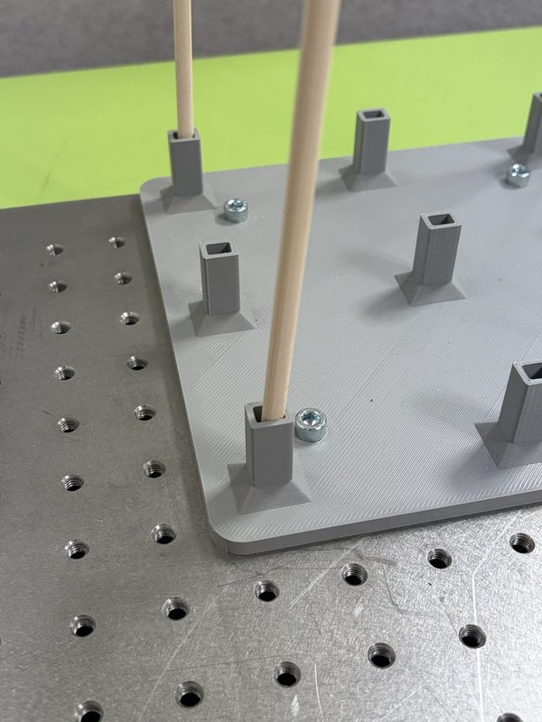
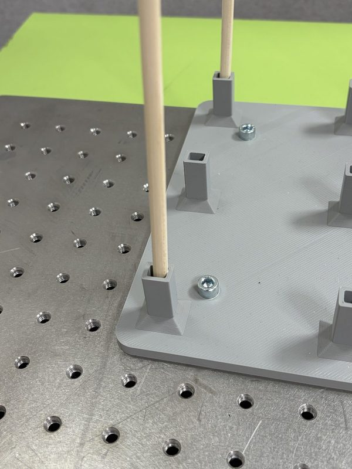
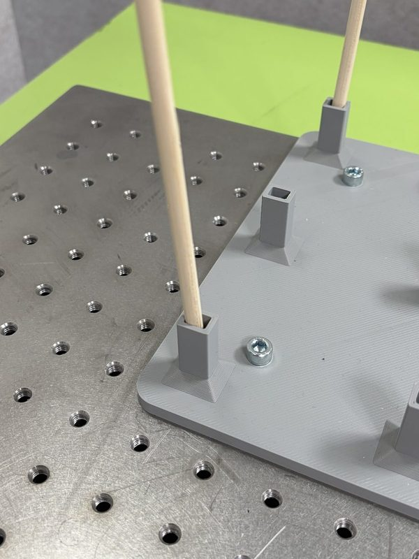
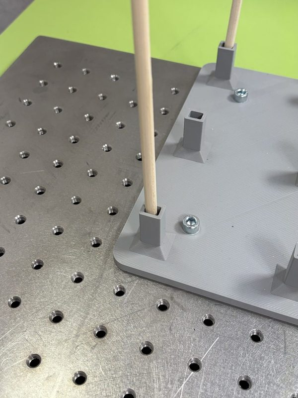
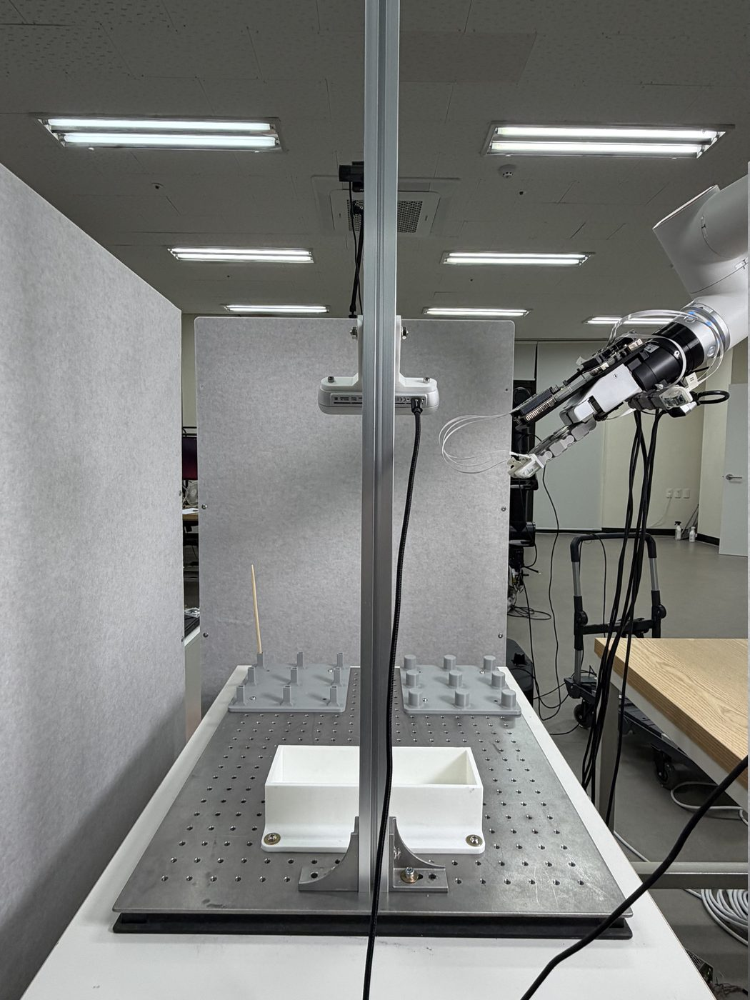
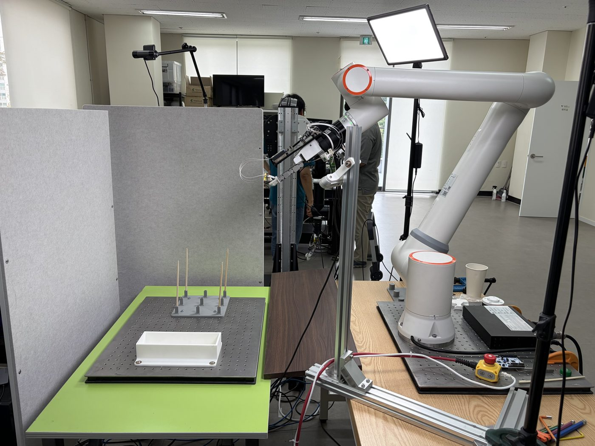

Teaching a five-finger robot hand to pick up a chopstick
Progress report on my VPLA thesis: what the vision-only policy can do, why it fails, and the new dataset that targets the cause.
In short
- At socket P1 the vision-only policy does the whole task (grasp, lift, place) in 4 of 4 trials. Overall it succeeds in 7 of 36, and 0 of 8 at the two sockets it never saw in training.
- Main cause of the failures: the policy memorised arm positions. It picks a rough target from its first camera look, then follows the arm movements it memorised. The cameras barely steer the rest of the reach or the grasp.
- So it closes the hand in the wrong place. At P1 it happens to close slightly short and succeeds; at the other sockets it closes too deep, with the chopstick against the palm. After a missed grasp it carries on with an empty hand, which looks like a drift.
- Fix: a new dataset (29 September) that forces the policy to use the cameras: fewer clean demos, more demos that start wrong and correct themselves.
The task
My thesis asks whether proximity sensors in the hand (a VPLA) help a vision-language-action model (VLA) grasp thin objects. To test that, we first need a solid vision-only baseline.
The FR10 arm with a five-finger DG-5F hand picks a chopstick from one of nine sockets and places it in the white container. We fine-tuned π0.5 on 154 teleoperated demonstrations. P5 and P9 were never shown in training, to test whether the policy generalises.

FL
FR
BL
BRThe corners are part of the task. In the demonstrations we rotated through all four corners at every socket, about 5–6 demos each. In the evaluation, every socket is tested once per corner: 9 sockets × 4 corners = 36 trials.
16 September 2026
P1: 4 of 4. Overall: 7 of 36.
At P1 the policy completed the whole task in every trial, from vision alone. Elsewhere it mostly failed, and at the held-out P5 and P9 it never got into position.
Each socket shows its four corners in place: far corners on top, near corners below.
Success P1, far-right corner, 16 September. Grasp, lift and place, in real time.
What the policy saw in this trial (224-pixel ego and wrist cameras)
Details
- 7/36 = 19% (95% interval 9–35%). With one trial per socket corner, only P1 clearly stands out.
- Evaluations before 15 September are void: the evaluation code fed the policy a lagging arm position. Fixing it took the same checkpoint from 0 of 6 to 4 of 5.
28 September 2026
Why it fails: the policy memorised arm positions
The policy sees two cameras and the arm's own joint angles. In our demonstrations, each socket was always reached along nearly the same arm path. So once the arm starts moving, its joint angles alone say where it is going, and the policy learned to follow them instead of looking.
- Wrong socket. At P3 the hand went to P6; at the held-out P5 and P9 it never got into position. The first camera look sets only a rough target, and the memorised path does the rest.
- Wrong depth at closing. The hand reaches the right socket but closes too deep, so the chopstick ends up against the palm and slips out.
- No recovery. After a missed grasp the hand carries on to the container empty. This is the drift we saw: the same motion as in a success, just with nothing in the hand.
Wrong socket (3)
Lateral misalignment: too deep, chopstick against the palm (10)
Right depth, grasp still missed (6)
Closed too early (1)
Never closed (1)
Held out: never in position (4)
Held out: collision or no approach (4)
Stage 2: reached it, grasp failed P3, far-left corner. The hand overshoots 52 mm past P3 toward P6 and closes there.
What the policy saw in this trial (224-pixel ego and wrist cameras)
All 29 failed trials from 16 September, grouped by what went wrong. Modes come from the logged arm poses (depth = hand position along the palm's facing direction when the fingers closed, relative to the demonstrations); the stage is the operator's score. There is no separate "drift" group: the sliding after a missed grasp is the policy's normal lift-and-carry motion with an empty hand (step 3).
Where the hand closes
From the logged arm poses we measured where the hand was when the fingers closed, along the direction the palm faces, compared with the demonstrations at the same socket. At P1 the policy closes about 8 mm short of the demonstrations, and all 4 grasps held. At the other trained sockets it closes at their depth or deeper (21 of 24 trials). The 7 successes closed at a median of −5 mm; the 21 failures at +8 mm.
How we know it is memory, not the cameras
We replayed recorded trials through the policy offline and changed only the camera images:
| Test | Result |
|---|---|
| Freeze both cameras for the last 4 cm before closing | Closing position moves by at most 1.5 mm (the errors are 6–12 mm) |
| Show a successful trial's images instead | Moves 1–4 mm, never toward the successful trial's position |
| Freeze both cameras from the start of the reach | P3 still heads for P6; the drift after closing is 83% unchanged |
| Same test on checkpoints from 10k to 45k training steps | No change, so training for less time would not help |
What about the camera angle? The old ego camera looked along the row P1→P2→P3, so neighbouring sockets looked alike. That made the first look weaker, but it is a smaller factor: even with the view changed, a policy that follows memorised arm paths would make the same mistakes. We re-aimed the camera anyway.
Details and limits
- Depth is measured horizontally along the palm's facing direction (checked on the top-view video), at the moment the commanded finger closure reaches 80%. Moving the assumed grasp point on the hand by ±50 mm changes each socket's number by at most about 3 mm.
- The success/failure split was not planned in advance (p = 0.002, 7 vs 21 trials, 4 of the 7 successes at P1): treat it as a lead.
- The replays are open-loop: the recorded arm state is fed back at every step, so small image effects cannot build up as they would on the robot.
- The first camera look does steer the target: swapping ego images between sockets moves the starting aim about half a socket forward/back and a fifth sideways. The wrist camera contributes almost nothing.
- The policy cannot feel a failed grasp: no touch or force signal is recorded.
29 September 2026
Next: a dataset that forces the policy to look
If every demonstration reaches a socket along the same path, the arm position gives the answer away. The new dataset breaks that: the same arm position must lead to different moves, depending on what the cameras show. Every episode still ends in a successful pick and place.
| Demo type | Per socket | What it teaches |
|---|---|---|
| Clean | 12 | The task, with the chopstick placed at varied spots inside the socket |
| Lateral correction | 8 | Start too close to or too far from the palm (15–35 mm), correct before closing |
| Regrasp | 8 | Close on nothing, re-open, correct, grasp properly |
| Redirect | 4 | Start toward a neighbouring socket, then turn to the right one |
- 224 demos: 32 at each of the 7 trained sockets, in shuffled rounds so that time of day can't give the socket away. P5 and P9 stay out of training.
- Also changed: the ego camera now looks diagonally from above, the arm starts higher, and a green table makes the chopstick easier to see.
- Then: train, and test on all 36 socket–corner slots, including checkpoints from partway through training.


Why it matters for the thesis: if the vision-only policy then succeeds everywhere, proximity sensing isn't needed for this task and the VPLA needs a harder one. If it still misses at the final grasp, proximity sensing has a clear job here.
Timeline
- Arm upgraded from FR5 to FR10; teleop, recording and evaluation rebuilt.
- a100 dataset recorded (215 demos, 154 for training); π0.5 fine-tuned.
- Evaluation bug (lagging arm position) found and fixed: 0/6 → 4/5.
- 36-trial baseline: 7 successes, P1 4/4, P5 and P9 0/8. Re-run of P2, P3, P5, P9: 0/16.
- Camera re-aimed, green table, new start pose.
- Offline tests: the failures come from memorised arm positions. New dataset designed.
- New dataset recorded; training starts.
Glossary
- VLA / VPLA
- Vision-language-action model (here π0.5); VPLA adds proximity sensors on the palm and fingertips.
- Ego / wrist camera
- The fixed camera that sees the scene, and the camera that moves with the hand.
- Socket, corner
- Nine chopstick positions P1–P9; in each, the chopstick leans into one of four corners.
- Held out
- Never seen in training: P5 and P9.
- Stage
- How far a trial got: 0 (collision) to 4 (placed in the container).